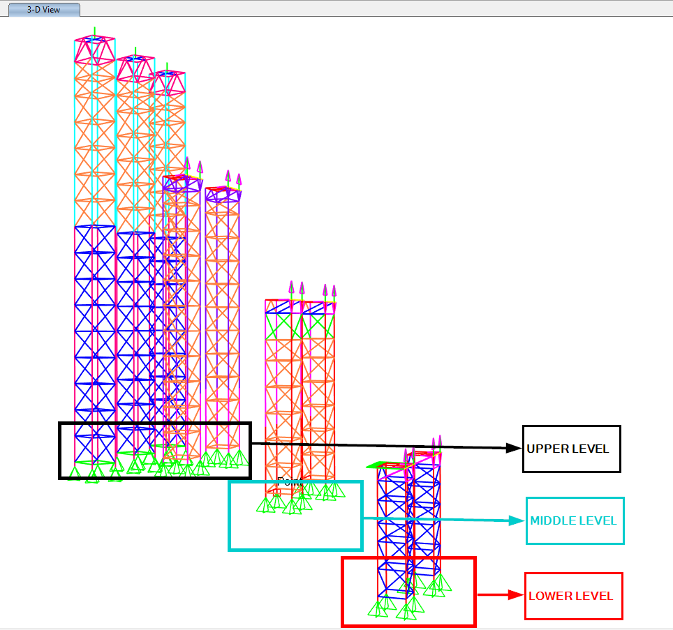
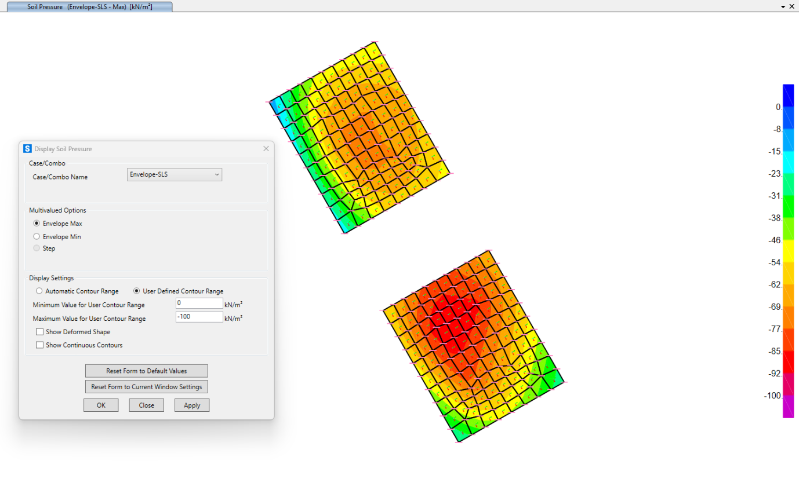
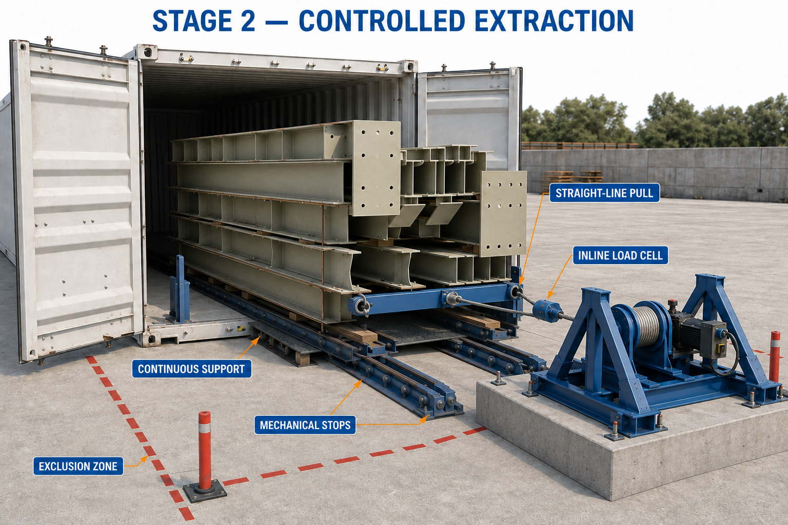
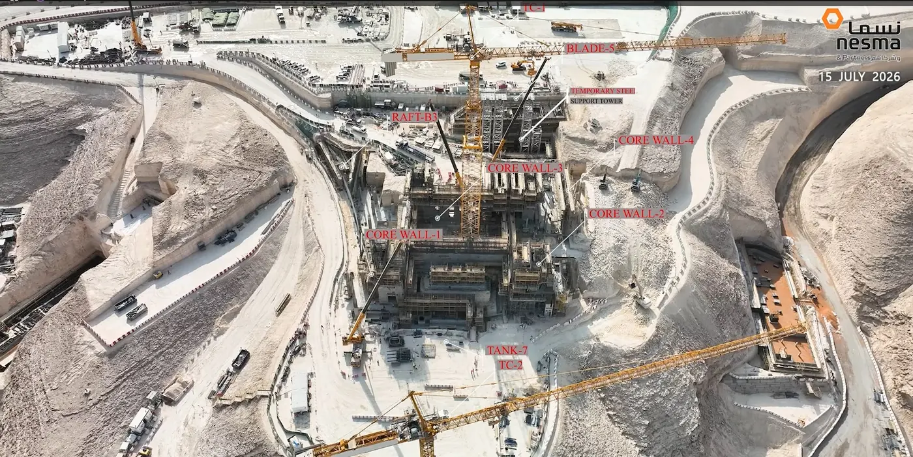
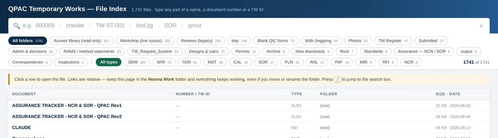
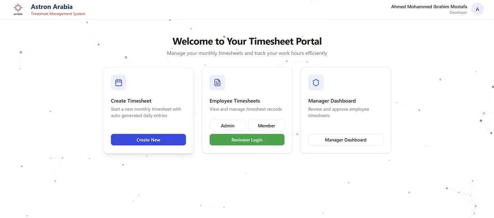

SELECTED VISUALS / ENGINEERING & SYSTEMS
See the work.
Models, drawings, and interfaces from the projects. Open an image to see the detail, or follow its case study for the context.

Formwork tower bracing
Model geometry · STAAD R07
View case study ↗
Inside the analysis model
STAAD.Pro view · Design development
View case study ↗
Mobile platform general arrangement
Shop drawing · Issued for approval
View case study ↗
Coordinated platform details
Shop drawing · Issued for approval
View case study ↗
Temporary tower foundation review
Submitted model · Independent review role
View case study ↗
Foundation pressure output
Submitted analysis considered in review
View case study ↗
Controlled steel extraction
Concept illustration · Not an as-built photo
View case study ↗
Engineering in the field
Annotated project survey
View case study ↗
Find the right document
Delivered document retrieval interface
View case study ↗
Temporary works request board
Implemented project workflow
View case study ↗
Inspection operations portal
Delivered application
View case study ↗
Bracing planes and tower groups
Plan from the design-development package
View case study ↗